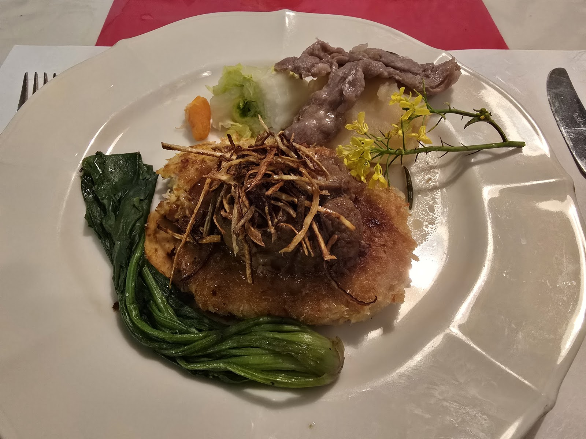
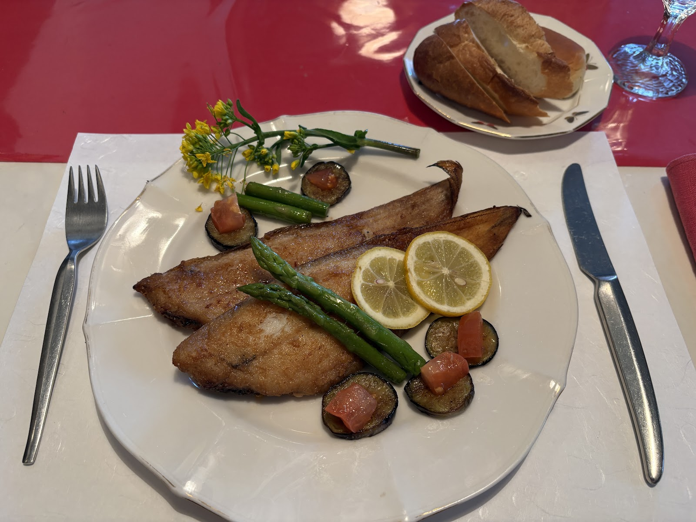

Photo: Den Den（Google マップ）

Photo: かすよしいつか（Google マップ）
一皿ごとに、丁寧な仕立てを
一歩亭は、千葉県我孫子市本町にある洋食店です。彩りを大切にした盛り付けや、ソースまで丁寧に仕立てられた一皿からは、気取りすぎない中にもしっかりとした仕事の跡を感じていただけます。ご近所の食事にも、少し特別な日のひとときにも、気軽に立ち寄っていただける一軒を目指しています。
千葉県我孫子市本町3丁目4-3

Voices
お客様の声
Googleクチコミからいただいた声を、原文のままご紹介します。
★★★★★
1年前
I used to go here with my family a lot, we have wonderful memories of the food and the kind service.
★★★★☆
5ヶ月前
This cozy French restaurant is located about 5 minutes from Abiko Station, right near Ito-Yokado. 🍽️ I've been wanting to try this place for a while, so I'm glad I finally got to visit!♬ I had lunch there, but the lighting was subdued and comfortable.✨ It's run by an older chef, so if you're going with a group, you might want to make a reservation, or if you're in a hurry, you might want to skip it. If you want a relaxing, enjoyable, and comfortable experience, it's best to make a reservation and let them know any special requests. I had a fish-based lunch with a dessert platter, and it was very satisfying. There is no on-site parking, so I recommend using the nearby coin-operated parking. *Please note that they will also accommodate allergies, your schedule, and desired ingredients when making a reservation.
★★★★★
8ヶ月前
This renowned restaurant serves authentic, painstakingly prepared French cuisine at surprisingly reasonable prices. The specialty, the Chestnut Mille-feuille, available only from October to December, is filled with rich chestnut paste and is an unforgettable taste. They are also child-friendly, with baby chairs available. The staff are very helpful and friendly. There is no children's menu, so it is recommended that you bring your own rice balls or other treats. Due to the elderly owner, it is unclear how long they will remain open. If you're interested, we recommend visiting early.
★★★★☆
8ヶ月前
I visited for lunch on the weekend. For 3,000 yen, I chose a course meal with meat as the main course and left it up to the chef. Everything from the appetizer to the dessert was carefully prepared on the spot. Both the appearance and the taste were fantastic. The meat, which had been simmered for a long time, was especially tender and delicious. The owner's gentle explanations were also very thoughtful and I appreciated it. Thank you for the meal. I hope you stay healthy and healthy forever.
★★★★★
1年前
We had the lunch course. For an extra ¥500, you get a dessert platter! Incidentally, the afternoon tea with just this dessert platter and coffee is ¥1000! The soup, salad, main fish dish, dessert platter, and coffee cost ¥3000. My daughter had the fish, tea, and dessert platter for ¥2000. The owner is very particular about his ingredients; he grows all the herbs he can't source himself, using organic methods. You can really see that he takes great care in every step of the cooking process. Especially the strawberry mousse. It tasted and smelled so much like eating fresh strawberries. The combination of cheese and yuzu was also excellent. It was a course that was enjoyable to look at, to smell, and to taste. It was a course that really energized me. If you make a reservation, they will accommodate your requests for specific dishes.